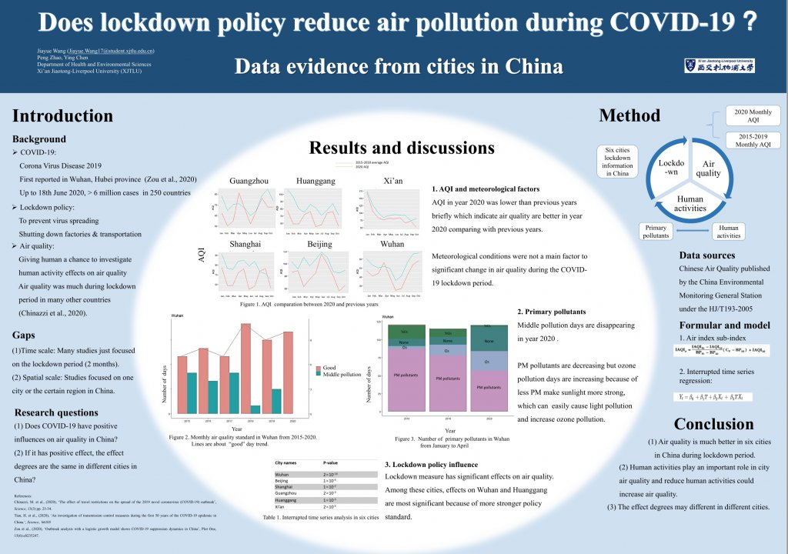

FYP 2021 by Jiayue Wang

This is the FYP by Jiayue Wang (2021).
Abstract
Corona Virus Disease 2019 (COVID-2019) is considered as a disaster in year 2020 for human beings and in order to prevent spread of this disease, a lot of countries have published a specific policy called lockdown measurement including China. During lockdown period, nearly all of public transportation and factories were closed and shut down. The lockdown measurement has negative effect on human-beings not only for public health but also for economy. However, this lockdown time gives scientists a unique opportunity to investigate human activities effects on air quality. This study chooses six typical cities (Beijing, Shanghai, Wuhan, Huanggang, Xi’an and Guangzhou) in China and compare air quality in year 2020 and previous years (2015-2019). In addition, daily primary pollutants are determined and linked with human activities. It is found that air quality is better in six cities during lockdown time. In addition, PM pollution decreased a lot during lockdown time although O3 pollution increased. Meteorological condition is not a main factor during lockdown after lockdown time, with the economy recovery, air quality is getting worse gradually but it do not reach previous level. In last 20 years, China published a series measurements and policies to reduce air pollution but some of them were not efficient. Hence, this research uses data evidence to show the interactions between human activities and air quality, which could give a reference for policy makers. For future studies, it is suggested that monitoring and exploring air quality after lockdown time and trying to find the relationships between economic recovery and air condition.
Keywords
COVID-19, lockdown policy, air quality, PM pollution, O3 pollution
Table of Contents
Acknowledgements 1
Abstract 3
1.1.2 Interactions between human activities and air quality 6
1.1.3 Chinese policies about air pollution 7
1.2 Gaps and research aims 9
2. Data and methodology 10
2.1 Workflow 10
2.2 Dataset and variables 11
2.3 Research scale 12
2.3.1 Time scale 12
2.3.2 Spatial scale 13
2.4 Evaluation method 14
3. Results 15
3.1 AQI comparation 15
3.2 Air quality standard comparison during lockdown 17
3.3 PM10 and SO2 pollution situation 19
3.4 Primary pollutants 21
3.5 Lockdown policy 23
4. Discussions 23
4.1 AQI and meteorological factors 23
4.2 Air pollutants change with human activities 25
4.3 O3 concentration during the lockdown period 26
4.4 Air quality under economy recover 27
4.5 Further directions and policies for human activities to reduce city air pollution. 28
5. Conclusion 29
6. References: 30
References
Alvarez-Herranz, A., Balsalobre-Lorente, D., Shahbaz, M., Cantos, J. M. (2017), ‘Energry innovation and renewable energy consumption in the correction of air pollution levels.’, Energy Policy, 105(2017), pp.386-397.
Azam, M. (2016), ‘Does environmental degradation shackle economic growth? A panel data investigation on 11 Asian countries’, Renewable and Sustainable Energy Reviews, 65(2016), pp.175-182.
Bao, R. & Zhang, A. (2020), ‘Does lockdown reduce air pollution? Evidence from 44 cities in northern China’, Science of the Total Environment, 731(2020), 139052.
Bernal, J., Cummins, S., Gasparrini, A. (2017), ‘Interrupted time series regression for the evaluation of public health interventions: a tutorial’, International Journal of Epidemiology, 46(1), pp.348-355.
Chen, S. & Chen, D. (2018), ‘A review of air pollution control policy development and effectiveness in China’, Energy Management for sustainable Development, doi:10.5772/intechopen.74928.
Chen, S., Oliva, P. and Zhang, P. (2018), ‘Air pollution and mental health: Evidence from China’, Working paper Series, National Bureau of Economic Research. Doi:10.3386/w24686.
Chen, J., Hu, H., Wang, F.F., Zhang, M., Zhou, T. et al. (2021), ‘Air quality characteristics in Wuhan (China) during the 2020 COVID-19 pandemic’, Environmental Research, 195(2021), 110879.
China National Environmental Monitoring Centre (2020). National Ambient Air Monitoring Network Continuous Automatic Monitoring of Ambient Air VOC Quality Control Technology Regulations (On Trial) [S]. China National Environmental Monitoring Centre, 2020.
Chinazzi, M., Davis, J.T., Ajelli, M., Gioannini, C., Litvinova, M. et al., (2020), ‘The effect of travel restrictions on the spread of the 2019 novel coronavirus (COVID-19) outbreak’, Science, [Online] a9757 https://doi.org/10.1126/science.aba97567.
Daellenbach, K.R., Bozzetti, C., Krepelova, A., Canocaco, F., Wolf, R., Zotter, P. (2016), ‘Characterization and source apportionment of organic aerosol using offline aerosol mass spectrometry’, Atmos Meas Tech, 9, pp.23-39.
Greenstone, G.M. and Hanna, R. (2014), ‘Environmental regulations, air and water pollution, and infant mortality in India, American Economic Review, 104(10), pp.3038-3072.
Health Effects Institute (2019) https://www.healtheffects.org
He, G., H. Peng, T. Temulun., Liu, J. and Mao, J. et al. (2018), ‘How harmful is air pollution to economic development? New evidence from PM2.5 concentrations of Chinese cities’, Journal of Cleaner Production, 172(2018), pp.743-757.
Johns Hopkins Coronavirus Resource Center (2020), COVID-19 Map, accessed 5 July. [Online] https://coeoavurys.jhu.edu/map.html.
Lalive, R., Luechinger, S. and Schmutzler, A. (2018), ‘Does expanding regional train service reduce air pollution? Journal of Environmental Economics and Management, 92(2018), pp.744-764.
Lian, X., Huang, J., Huang, R., Liu, C., Wang, L., Zhang, T. (2020), ‘Impact of city lockdown on the air quality of COVID-19 hit of Wuhan city’, Science of Total Environment, 742(2020), 140556
Ma, T., Duan, F., He, K., Qin, Y., Tong, D. et al., (2019) ‘Air pollution characteristics and their relationship with emissions and meteorology in the Yangtze River Delta region during 2014-2016’, Journal of Environmental Science, 83, pp.323-333.
Ministry of Environmental Protection of China, (2018). Technical Specifications for
Operation and Quality Control of Ambient Air Quality Automated Monitoring
System for Particulate Matter (PM10 and PM2.5): HJ 817-2018 [S]. China Environmental Science Press, Beijing, 2018.
Peng, P. D., Bell, M.L., Geyh, A.S., Mcdermott, A. et al., (2019), ‘Emergency admissions for cardiovascular and respiratory disease and the chemical composition of fine particle air pollution.’, Environmental Health Persp, 117, pp.957-963.
Ren, Y., Liu, S., Yang, L., Shan, J., Liu, Y. and Li, H. (2020), ‘Practice and exploration of infection prevention and control measures based on risk management of surgical patients during the epidemic of corona virus disease 2019 (COVID-19)’, American Journal of Infection Control, ISSN 0196-6553, https://doi.org/10.1016/j.ajic.2020.07.023.
Shi, Q., Guo, F and Chen, S. (2016), ‘Political blue sky in Fog ad Haze governance-Evidence from the local annual Two Sessions in China’, China Industrial Economics, 5(2016), pp.40-56. (In Chinese).
Song, H., Sun, Y. and Chen, D. (2019), ‘Assessment for the effect of government air pollution control policy: Empirical evidence from ‘Low-carbon City’ construction in China’, Management World, 23(6), pp.95-108.
Tian, H., Liu, Y., Li, Y., Wu, C., Chen, B., Kraemer, M.U. et al., (2020), ‘An investigation of transmission control measures during the first 50 years of the COVID-19 epidemic in China.’, Science, [Online] b6105 https://doi.org/10.1126/science.abb6105.
Wang, P.F., Chen, K., Zhu, S., Wang, P., Zhang, H.L. (2020), ‘Severe air pollution events not avoided by reduced anthropogenic activities during COVID-19 outbreak’, Resources, Conservation and Recycling, 158(2020), 104814.
Wang, H., Li, J., Peng, Y., Zhang, M., Chen, H., Zhang, X. (2019), ‘The impacts of the meteorology features on PM2.5 levels during a severe haze episode in central-east China’, Atmos. Environ. 197, pp.177-189
World Health Organization (2020). Report of the WHO-China joint mission on COVID-19. Available at: https://www.who.int/docs/default-source/coronaviruse/who-china-joint-mission-on-covid-19-final-report.pdf.
Wuhan Bureau of Statistics (2021). Wuhan GDP notice in year 2020. Available at: http://tjj.wuhan.gov.cn/
Xi, P. & Liang, R. (2015), ‘The impact of gasline price fluctuations on the air pollution: Through the channel of motor vehicle use’, China Industrial Economics, 54(8), pp.136-151.
Xin, H., Gao, A.D., Jian, B., Zhou, Z. Qi, X. (2020) Enhanced secondary Pollution Offset Reduction of Primary Emission during COVID-19 Lockdown in China
Yi, K., Liu, J.F., Wang, X.J., Ma, J.M., Hu, J. et al., (2019), ‘A combined Arctic-tropical climate pattern controlling the inter-annual climate variability of wintertime PM2.5 over the North China Plain’, Environment Pollution. 245. https://doi.org/10.1016/j.envpol.2018.10.136
Yuval, T., Raz, R., Levi, Yoav and David, M (2020), ‘Emissions vs. Turbulence and atmospheric stability: a study of their relative importance in determining air pollutant concentrations’, Science of Total Environment, 733.
Zhang, J. & Mu, Q. (2018), ‘Air pollution and defensive expenditures: Evidence from particulate-filtering facemasks’, Journal of Environmental Economics and Management, 92(2018), pp.517-536.